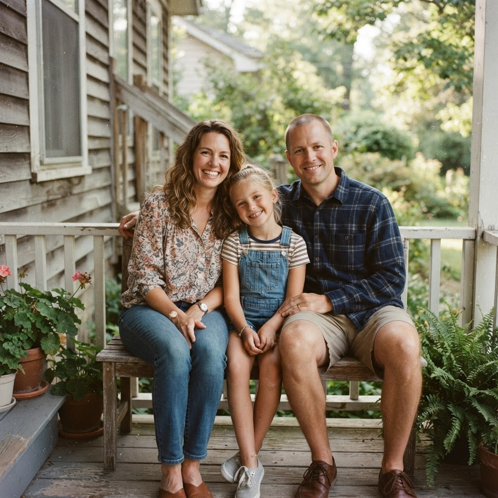

原流程把「选照片 → AI 看图 → 认人物 → 确认标注 → 讲故事 → 确认讲述 → 构建」拆成了一长串平铺的按钮，用户容易不知道下一步该点哪个。下面这版把整个交互收进一张卡片、一次只做一件事：认人（AI 识别自动在后台完成，无需手动点按钮）→ 讲故事 → 完成。每一屏只保留一个主按钮，其余操作都降级为不抢注意力的文字链接。

3 张照片 · 原图保留在本地
点一下人脸就能起名字；认不出的先跳过，之后随时可以回来补。
其他照片还在后台自动找人脸，找到后你随时可以切过去认一认。
时间、发生的事、只有你知道的细节——写多写少都行，留白也没关系。
确认后会收进你的理解库；照片原图始终留在本地，不会被上传。
那年夏天我们回外婆家过暑假，院子里的葡萄架刚好结果，舅舅从部队休假回来，难得一家人凑齐拍了这张照片。